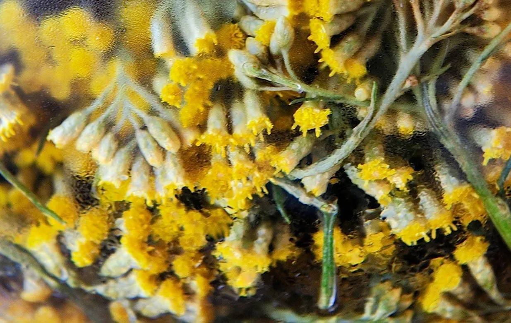

Божественный крем Дивайн
Этот восхитительный крем с роскошной текстурой воздействует на все признаки возраста, обновляя кожу. Кожа становится более плотной, свежей и упругой ...
ПОДРОБНЕЕ


ОПИСАНИЕ
Этот восхитительный крем с роскошной текстурой воздействует на все признаки возраста, обновляя кожу.
Кожа становится более плотной, свежей и упругой. Контур лица подтянут. Кожа сияет изнутри, тон лица выравнивается.
Кожа выглядит и чувствует себя полностью восстановленной. В формулу крема специалисты лаборатории L'OCCITANE добавили комплекс из 7 натуральных активных компонентов, которые усиливают действие основного ингредиента - экстракта цветков корсиканского бессмертника.
Новая формула крема получила 5 патентов и оказывает антивозрастное действие на глубинную структуру клеток кожи.
ПРИМЕНЕНИЕ
Для максимальной эффективности крема, специальной особой техники:
1. Согрейте небольшое количество крема в ладонях, это усилит действие эфирных масел и улучшает проникновение в организм.
2. Сделайте вдох и насладитесь восхитительным ароматом крема.
3. Легкими разглаживающими движениями нанесите крем на кожу лица, слегка надавливая в централь части.
4. Нанесите крем восходящих движений на шею от области декольте до подбородка поочередно правой и левой ладонями.
5. Нанесите небольшое количество крема на лоб разглаживающими движениями от левого виска к правому и затем - в обратном направлении.
6. Помассируйте кожу лица энергичными щипками по направлению от подбородка к ушам. Эта техника стимулирует микроциркуляцию кожи и способствует ее обновлению.
7. Несколько раз проведите ладонью по шее. Эти поглаживания поддерживать дренажный эффект, избавляя клетки от токсинов.
8. Разглаживающими движениями проведите от подбородка к основанию шеи справа, по центру и слева. Затем - от крыльев носа к вискам и от центра лба к вискам.
9. Закройте уши ладонями и в тишине ощутите удовольствие от проделанной процедуры. Слегка надавите ладонями на уши и расслабьтесь.
Узнавайте первыми о новинках и специальных акциях!
t.me/loccitaneuz_bot